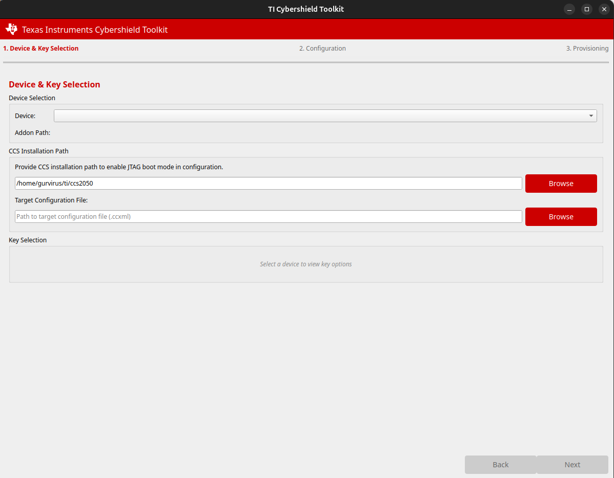

1 : Introduction
Note
TI Cybershield Toolkit is a comprehensive solution for secure provisioning of Texas Instruments embedded processors.
This tool provides both a command-line interface (Secure Provisioning Tool (CLI)) and a graphical user interface (CST GUI).
Currently supported device family: F29H85x.
1.1 Scope
The TI Cybershield Toolkit enables the secure provisioning of keys and code for Texas Instruments processors. It provides functionality for:
Key Generation and Management
X.509 Certificate Generation
Device Key Provisioning
Code Provisioning
Device State Management
Secure Boot Configuration
The tool supports the following workflows:
Key Generation: Create and manage secure keys for device provisioning
Certificate Generation: Generate X.509 certificates with secure encryption
Key Provisioning: Transition devices from Field Secure (HSFS) to Key Provisioned (HSKP) state
Code Provisioning: Transition devices from Key Provisioned (HSKP) to Security Enabled (HSSE) state
Important
Provisioning is an irreversible process. See Provisioning Irreversibility Warning for full details.
1.2 GUI Overview
{kind=link}

The CST GUI provides a user-friendly interface for performing all provisioning operations.
1.3 Features Supported
Device family support: F29H85x
- Key management:
Generation of RSA keys (RSA4K)
Secure key storage with password protection
PKCS#11 HSM smart card integration
- Certificate generation:
X.509 certificate creation with TI FEK public key encryption
Support for multiple key types and algorithms
- Device provisioning:
Both UART and JTAG interfaces supported
Automated provisioning with progress monitoring
Detailed provisioning logs and diagnostics
- User interfaces:
Command-line interface for automation and scripting
GUI for interactive provisioning workflows
Wizard-based interface for step-by-step guidance
1.4 Device States and Transition
The security provisioning process involves transitioning the device through different security states:
HS-FS |
HS-KP |
HS-SE |
|
|---|---|---|---|
Description |
Field Secure |
Keys Provisioned |
Security Enabled |
Boot Image Security |
Secure boot not enforced |
Secure boot enforced with customer keys programmed by provisioning tool |
Secure boot enforced with customer keys programmed by provisioning tool |
HSM Boot Image |
Secure boot enforced (Only TI signed binaries) |
Secure boot enforced with customer keys programmed by provisioning tool |
Secure boot enforced with customer keys programmed by provisioning tool |
JTAG Access |
Open by default |
Open by default |
Closed by default |
SoC Firewalls |
Open by default |
Enabled for specific processors |
Enabled for specific processors |
1.5 Tool Architecture
The TI Cybershield Toolkit consists of the following components:
Core Library: Provides the fundamental functionality for key generation, certificate creation, and device provisioning
Command-line Interface: Exposes the core functionality through a command-line tool called cst
Graphical User Interface: Provides a user-friendly interface accessible via cstgui command
Hardware Support: Interfaces with devices through UART and JTAG connections
The tool follows a layered architecture:
+----------------------+
| GUI (cstgui) |
+----------------------+
|
+----------------------+
| CLI Tool (cst) |
+----------------------+
|
+----------------------+
| CST Core Lib |
+----------------------+
|
+----------------------+
| Hardware Interface |
+----------------------+
1.6 Secure Binaries Addon
Note
An addon of secure binaries is available for use with the TI Cybershield Toolkit. This addon provides prebuilt HSM binaries for both Key Provisioning and Code Provisioning, enabling production-ready provisioning workflows without requiring customers to build HSM firmware from source.
Contact a TI representative for more information on obtaining the secure binaries addon.
Warning
SR_20 (Rev B/Rev C) OTP Keywriter Binary Not Included in Secure Binaries Addon
The secure binaries addon ships only the SR_10 (Rev A) OTP Keywriter binary. Users with Rev B or Rev C silicon must obtain the SR_20-specific OTP Keywriter binary separately from the SBL Keywriter package — it is not bundled in the addon. Contact a TI representative for more information on obtaining the correct binary for your device revision.
1.7 Licenses
The licensing information of TI Cybershield Toolkit is enumerated as part of the manifest. A complete manifest along with export control information is detailed here.